Why we changed things
The cast looked too similar, the outfits felt too clean for an apocalypse, and abilities died after one use. We cover all three in One Job Each: The 4.1 Character Rework. Here's the full card-by-card result.
The core change: cost and timing, not a counter
Old cards had three lines: phase, usage limit, effect. 4.1 drops the limit — abilities are now gated by a supply cost, a phase lock, or a built-in drawback instead of a counter that just runs out. The art was rebuilt to match, with better lighting, more detail, and a godray fix that keeps blacks from washing out across the whole set.
MARK: one gesture, four cards
Four cards in this set now share a single mechanic. Mark: place your character card onto another player's character card. It stays there until, on your turn, you move it to another player or take it back. Whoever runs it only gets one, so leaving it on someone means you aren't watching anyone else, and moving it costs your turn. It's mentioned once here and referenced by name on each of the four cards below: Warden, Sentry, Overwatch, and Enforcer.
Detective — Enforcer, Informant, Inspector
Indirect intel. Scientists and the Amnesiac deal in confirmed facts; Detectives deal in suspicion — a hand seen, a pattern noticed, a player watched over several turns. It might point at something, it might mean nothing. Not every kind of knowing in this game should feel the same.
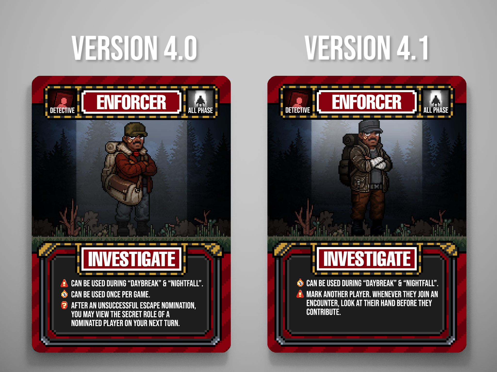
The old jacket was bright red, which fought with the red Detective card frame and made the card muddy. He's in a darker field jacket and slate cap now — same pose, just readable.
Old Investigate: after an unsuccessful escape nomination, you may view the Secret Role of a nominated player on your next turn.
New Investigate: mark another player. Whenever they join an encounter, look at their hand before they contribute.
Contributions in an encounter go in face down and are only revealed at resolution. Enforcer already saw the hand going in, so he's the one who can call it when someone claims "that's all I had." No more once per game — every encounter his mark joins is another look.
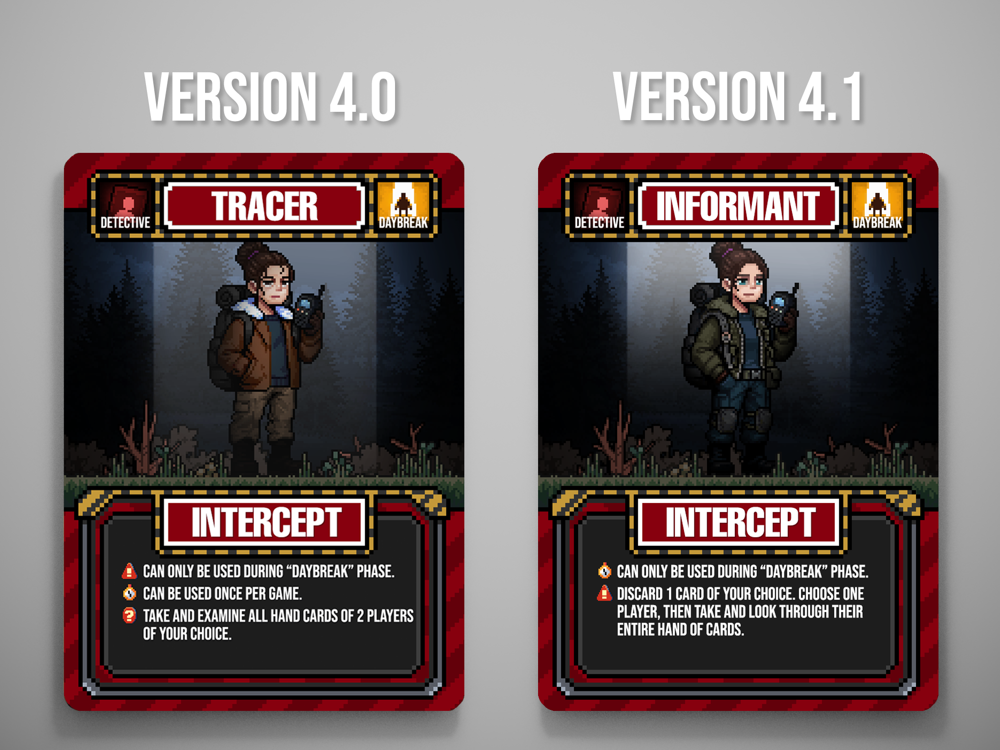
Renamed. Kept the ability name, Intercept.
Old Tracer: once per game, take and examine all hand cards of 2 players of your choice.
New Informant: discard 1 card of your choice. Choose one player, then take and look through their entire hand of cards. You may target the same player again on future turns.
Half the reach, one player instead of two, but repeatable for as long as you're willing to pay for it, and you can return to the same target if you think they picked something up. One enormous moment became a constant, ongoing presence.
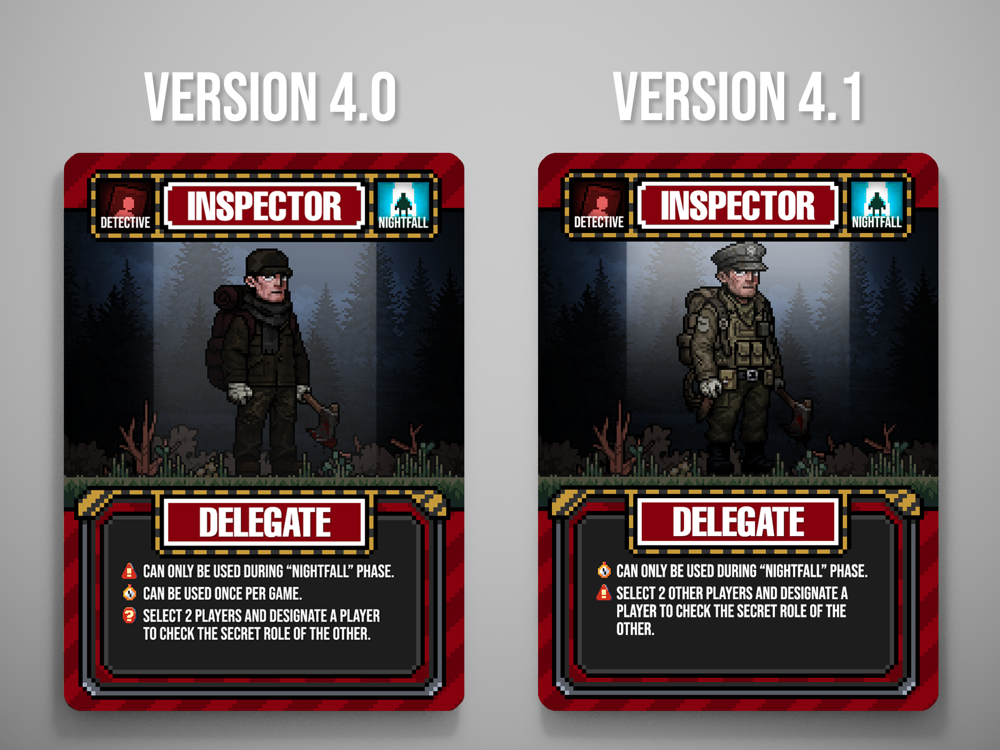
Was a cap, a scarf and a hatchet — read like anyone else in the woods. Now a peaked officer's cap and full uniform with a chest rig, someone who can actually tell two other people what to do.
Delegate (unchanged in effect): select 2 other players and designate a player to check the Secret Role of the other. We added "other" to make clear you can't include yourself, and removed the once-per-game line.
He never learns anything himself — he hands the information off and watches what happens with it. Once per game that was a novelty. Every Nightfall, it's a whole style of play.
Scientist — Geneticist, Virologist
Direct intel, confirmed and immediate — the counterpart to the Detectives' suspicion.
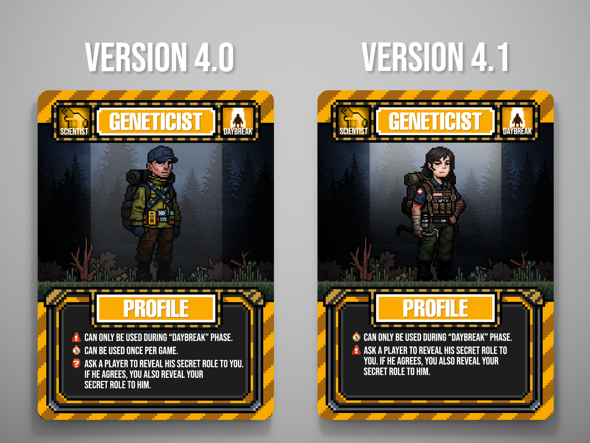
Uses the old female model from the retired Paramedic character.
Diagnose (text unchanged): ask a player to reveal their Secret Role; if they agree, you reveal yours to them too. Usable during Daybreak only — that phase lock was already doing the limiting, so the once-per-game line was simply removed.
If she's repeatedly asking players to reveal, and revealing her own role back in return, that itself is a tell. A player with something to lose doesn't offer to show their hand first.
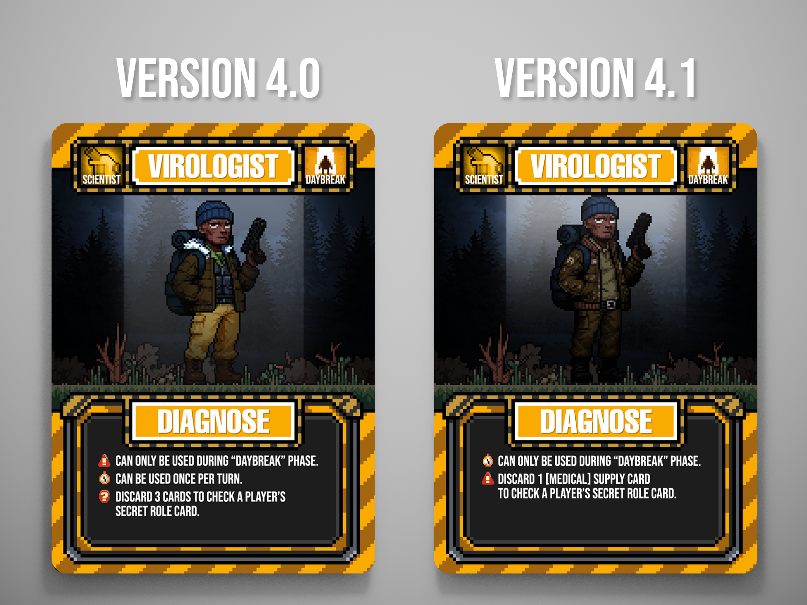
Same character, same beanie, repainted properly — a proper bomber jacket with a unit patch replaces the old shapeless jacket with its oversized white fur collar.
Old Diagnose: once per turn, discard 3 cards to check a player's Secret Role.
New Diagnose: discard 1 [SAMPLE] supply card to check a player's Secret Role.
Three unspecified cards just punished you for having a hand. One typed Sample is a smaller cost in raw cards but a sharper one in practice — Samples are the one thing every escape plan needs, so every check burns a resource the whole table is short on.
Amnesiac — Outlander
Direct intel, but self-blind.
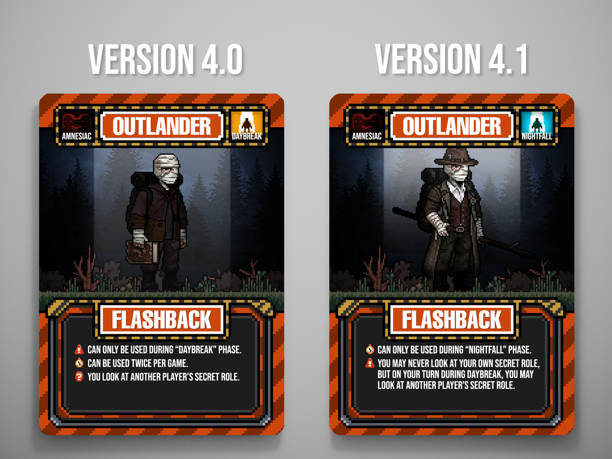
Was a bandaged man in a plain coat holding a book — everything but the bandages said nothing. The bandages stay, because that's the character, but everything around them changed: wide brim hat, long coat, waistcoat, cravat, bandaged hands, a staff. He now reads as a drifter who's been walking a long time, with a silhouette nobody else in the cast shares.
Old Flashback: twice per game, look at another player's Secret Role.
New Flashback: you may never look at your own Secret Role, but on your turn during Daybreak, you may look at another player's.
The restriction isn't new — he was always unable to check himself — it's just on the card now instead of left to the category box. With the counter gone, that one drawback carries the whole card: a new look every Daybreak, all game, just never at himself.
Hunter — Sentry, Duelist, Survivalist
Encounter combat.

Same face and hat, reworked outfit: more protective gear, gloves added, a brown accent on the rifle instead of pure black.
Old Longshot: twice per game, whenever an encounter is drawn, reduce the damage required by 2.
New Crossfire: mark another player. Whenever that player takes part in an encounter, [-1] danger.
The old flat discount got spent on whatever came up first, no real decision involved. Crossfire runs Mark instead — she covers whoever she's watching, and every encounter they walk into gets quieter, whether or not she's standing next to them. That's also why Deadeye became Sentry rather than the other name on the table, Captain: the old name was about the rifle, Captain was about leading a fight, Sentry is about watching someone else's — exactly what Crossfire does.
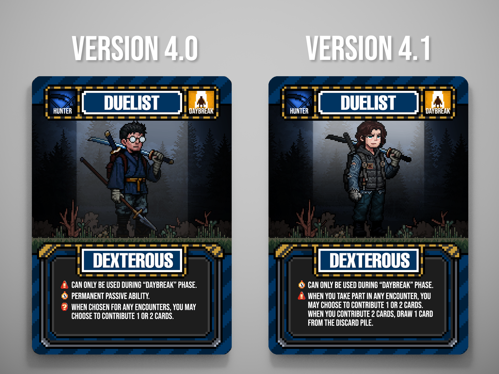
Was twin swords, blue tunic and round glasses — stylistically the character that stuck out most, looking like it walked in from a different game. New design: puffer vest, patched denim, a katana across the back — still fast and light, but grounded in the same world as everyone else.
Old Dexterous: when chosen for any encounter, you may choose to contribute 1 or 2 cards.
New Dexterous: when you take part in any encounter, you may contribute 1 or 2 cards. When you contribute 2 cards, draw 1 card from the discard pile.
A pure passive that let you spend less became a small engine — committing two cards partially pays for itself, giving a real choice every encounter instead of a permission slip.
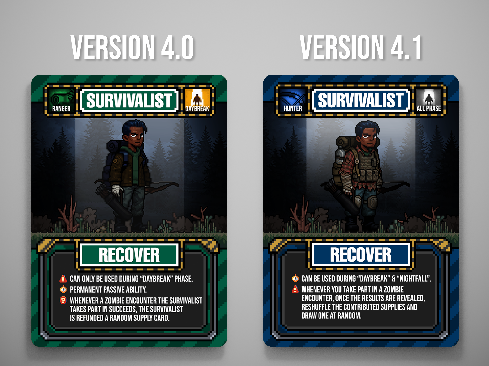
The one who most obviously "went through something": torn sleeve, bloodied bandaging up the arm, an armour plate on the shoulder, replacing a plain hoodie-and-crossbow look. Moved from Ranger to Hunter — the original plan was to move Disruptor into Hunter instead, but every ability written for her afterward fought that placement. Survivalist was the actual outlier.
Old Recover: whenever a zombie encounter he takes part in succeeds, refunded a random supply card. Daybreak only.
New Recover: whenever you take part in a zombie encounter, once the results are revealed, reshuffle the contributed supplies and draw one at random. All Phase.
It used to pay out only on a win, in one phase. Now it triggers every zombie encounter he joins, win or lose — pulling something back out of a loss fits the character, and he contributes every round instead of only the good ones.
Ranger — Blacksmith, Forager, Prospector
Discard economy.
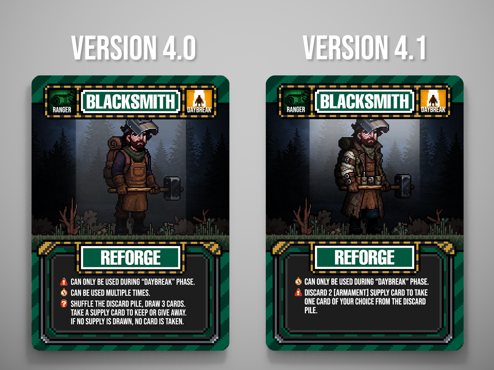
Was a welding mask and overalls — very literal village blacksmith. Now a trench coat with makeshift arm armour built from belts and wraps, reading combat-ready rather than someone repairing gear at a bench.
Old Reforge: shuffle the discard pile, draw 3 cards, take a supply card to keep or give away — if no supply is drawn, you get nothing.
New Reforge: discard 2 [ARMAMENT] supply cards to take one card of your choice from the discard pile.
No more walking away with nothing through no fault of your own. Now it's a trade: pay two Armaments you'd otherwise want to use, get exactly the card you need.
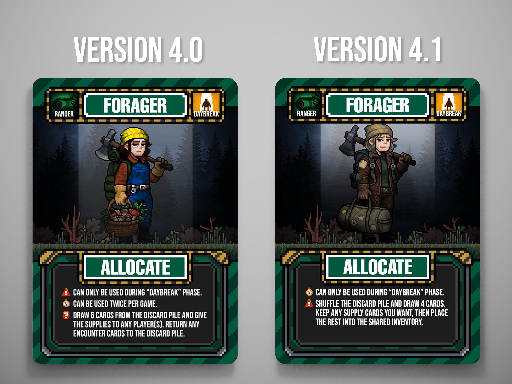
Was a blue apron, yellow bandana and a wicker basket of vegetables — looked like a farmer's market. Now a worn-out beanie, worn jacket, big canvas duffel, and an axe over the shoulder.
Old Allocate: twice per game, draw 6 cards from the discard pile and give the supplies to any player(s), return any encounter cards to the discard pile.
New Allocate: shuffle the discard pile and draw 4 cards. Keep any supply cards you want, then place the rest into the shared inventory.
Fewer cards, no encounter-sorting step, leftovers go into the shared inventory instead of being handed out one by one — faster, and repeatable all game instead of twice.
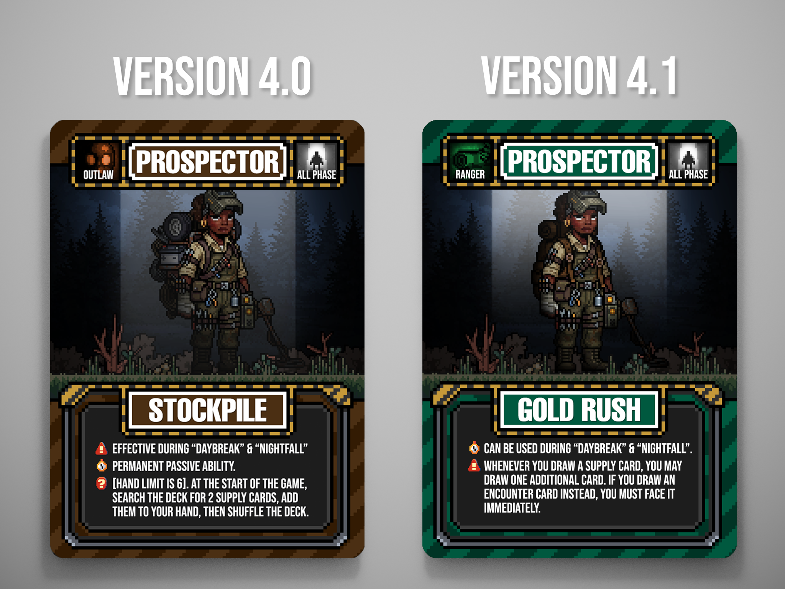
Already one of the stronger designs, so mostly a repaint plus the same godray fix as the rest of the set. Simpler backpack, better shading, pouches that actually read as pouches. Moved to Green Class.
Old Stockpile: hand limit is 6, and at the start of the game you search the deck for 2 supply cards.
New Gold Rush: whenever you draw a supply card, you may draw one additional card. If you draw an encounter card instead, you must face it immediately.
A one-time setup bonus became a push-your-luck engine running the whole game, with a real downside sitting in the text — greed can walk you straight into an encounter you weren't ready for.
Scrapper — Pathfinder, Surveyor, Disruptor
Encounter deck control.
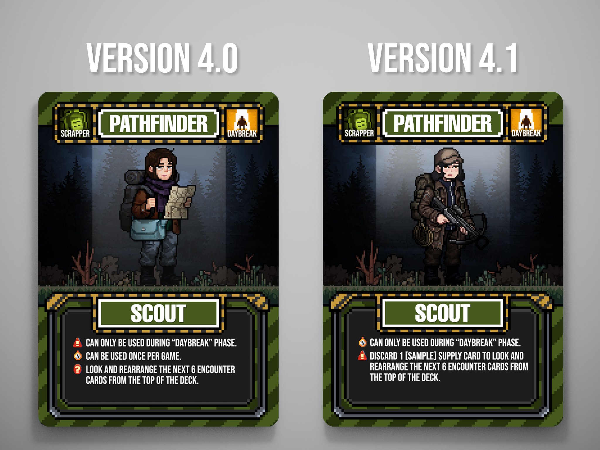
Was a paper map, a puffy jacket and a handbag — read like a tourist who'd got lost. Now short hair, a dark coat, and a crossbow: still the navigator, but someone who can handle what she finds.
Scout (effect unchanged): look at and rearrange the next 6 encounter cards from the top of the deck. Limiter swapped from once per game to discard 1 [SAMPLE] supply card.
Stacking the next six encounters is a genuinely powerful play — now it's usable as often as you can pay for it, which gives Samples a real decision attached.
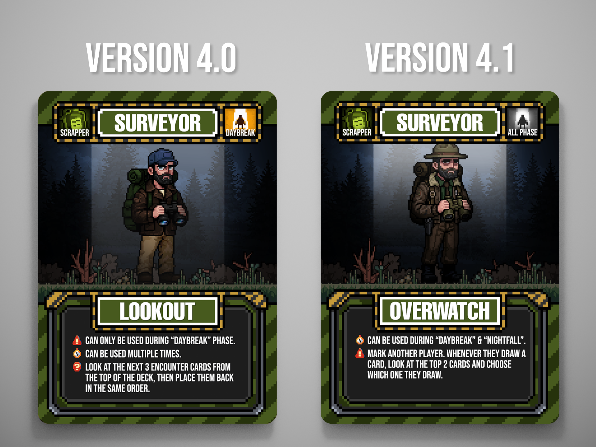
Went from "guy in a cap with binoculars" to a proper ranger: brimmed hat, beard, field harness.
Old Lookout: look at the next 3 encounter cards from the top of the deck, then place them back in the same order.
New Overwatch: mark another player. Whenever they draw a card, look at the top 2 cards and choose which one they draw.
The old version gave information and nothing else. Overwatch runs Mark — he's not stacking his own deck anymore, he's watching a person, and once marked, every card that player draws goes through him first.
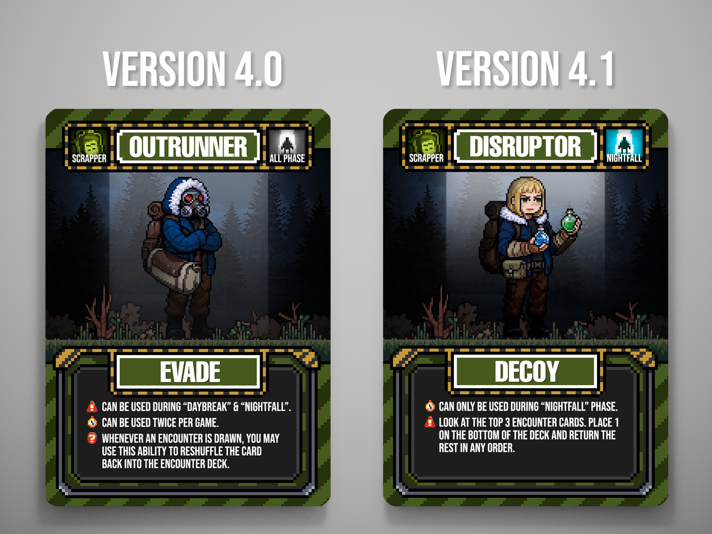
Travelled the furthest from where it started. The old design was fully masked — gas mask, fur hood, nothing visible — but Trickster and Stranger already hide their faces, and three masked characters out of eighteen was too many for a cast that needed to feel distinct. She has a face now, and holds what she actually uses: two flasks, ready to throw.
Old Evade: twice per game, when an encounter is drawn, reshuffle that card back into the encounter deck.
New Decoy: look at the top 3 encounter cards. Place 1 on the bottom of the deck and return the rest in any order.
The old ability was a personal undo button, fixing only your own bad luck. Pathfinder can rearrange what's coming and Surveyor can pick which of three cards someone draws, but neither can remove an encounter — Disruptor is the only character in the set who can make one disappear for good, in full view of the group. That's also the new name: not running away, but what she does to the board.
Outlaw — Stranger, Trickster, Warden
Player interference.
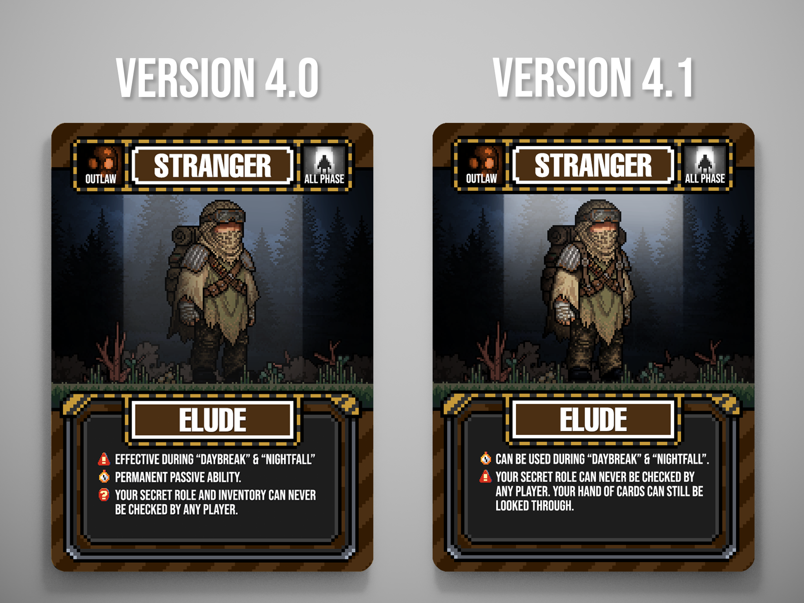
Same silhouette — goggles, scarf, layered rags — it was already working. Godray fix applied here too, brighter and tapered so the pants and shading pop instead of washing out behind the light.
Old Elude: your Secret Role and inventory can never be checked by any player.
New Elude: your Secret Role can never be checked by any player. Your hand of cards can still be looked through.
The old version left no way to get any information on him at all, which wasn't fun to play against. He keeps what makes him the Stranger, but the Informant can now go through his hand — what he's carrying can give him away even when what he is can't.
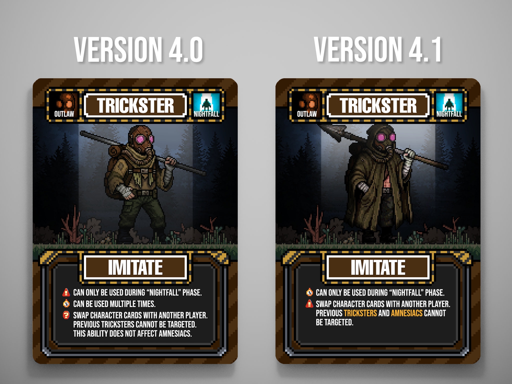
The pink-lensed mask stays and the goggles are rounder now, but everything else is new: a long hooded robe replaces the fitted vest and cargo pants that made him look like a soldier, and a huge harpoon replaces the metal staff, giving him a grim reaper edge instead of a tactical one.
Ability effect unchanged, text rewritten: swap character cards with another player. Previous Tricksters and Amnesiacs cannot be targeted. Keyword terms are highlighted directly on the card now, a treatment applied across the whole set.
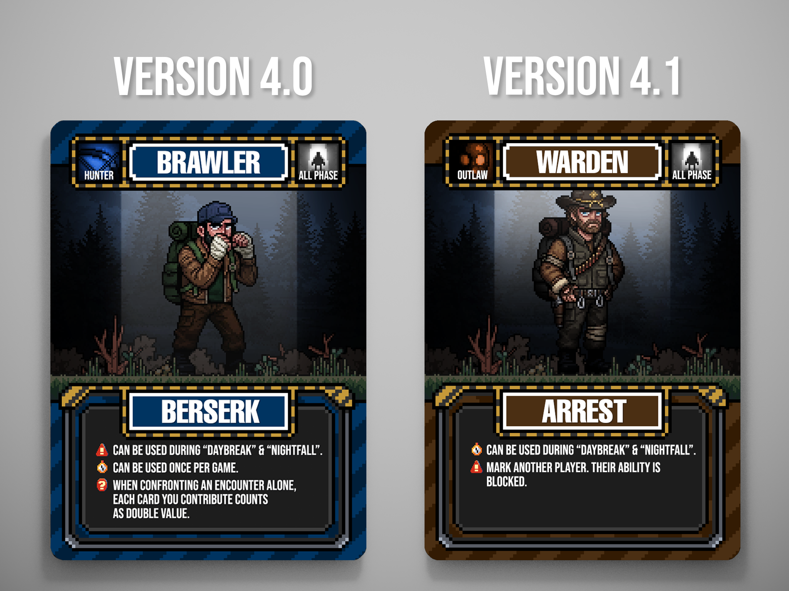
The lockdown job that used to belong to Brawler moved through a new character called Sheriff before landing here — Sheriff sat in Hunter, which is combat, not interference, so it moved to Outlaw and was renamed Warden, since a Sheriff sitting in the Outlaw faction was a contradiction.
New Arrest: mark another player. Their ability is blocked.
The strongest card in the set for a simple reason: everyone at the table can see the mark sitting there. An arrest isn't a secret, it's an argument, and that visible placement generates more table drama than anything else in the set. He only gets one Mark — holding it on the same player all game means nobody else is being watched, and moving it costs a turn.
What this actually changes
Removing the limits was never just tidying up card text. You're not spending one ability and coasting to the finish line — every turn now has something you can do, if you're willing to pay for it. That speeds the game up, and it makes it harder for Carriers to hide: with this many reusable abilities running at once, information keeps surfacing whether anyone likes it or not. The answer isn't panic, it's deduction — a Detective faction built entirely around suspicion rather than proof, sitting opposite the confirmed facts a Scientist or the Outlander deal in.
Final roster
| Faction | Members | Job |
|---|---|---|
| Detective | Enforcer, Informant, Inspector | Indirect intel |
| Scientist | Geneticist, Virologist | Direct intel |
| Amnesiac | Outlander | Direct intel, self-blind |
| Hunter | Sentry, Duelist, Survivalist | Encounter combat |
| Ranger | Blacksmith, Forager, Prospector | Discard economy |
| Scrapper | Pathfinder, Surveyor, Disruptor | Encounter deck control |
| Outlaw | Stranger, Trickster, Warden | Player interference |
Eighteen characters, seven factions. Counts run 3 / 3 / 3 / 3 / 3 / 2 / 1, phase spread 6 Daybreak, 5 Nightfall, 7 All Phase. Next up: Recommended Game Configuration, breaking down Secret Role and Character class counts for every player count.